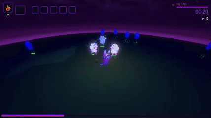
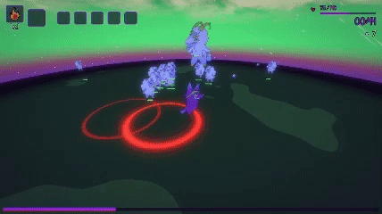
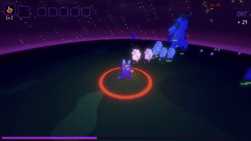
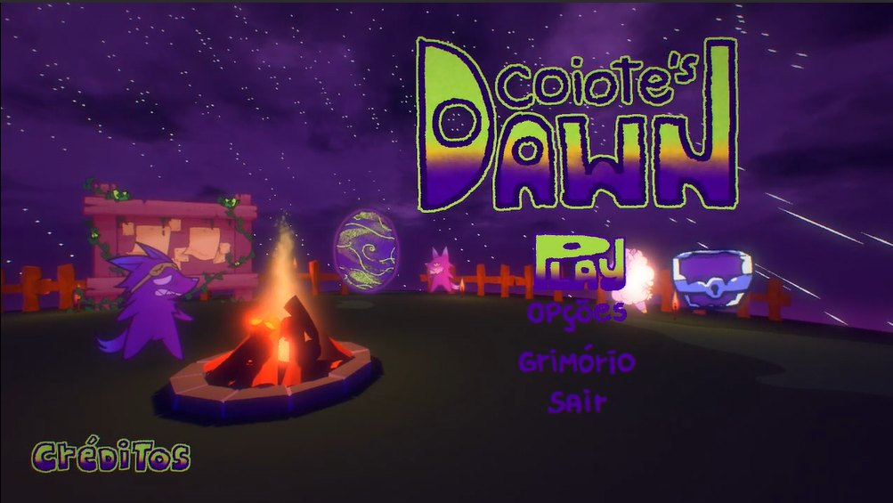
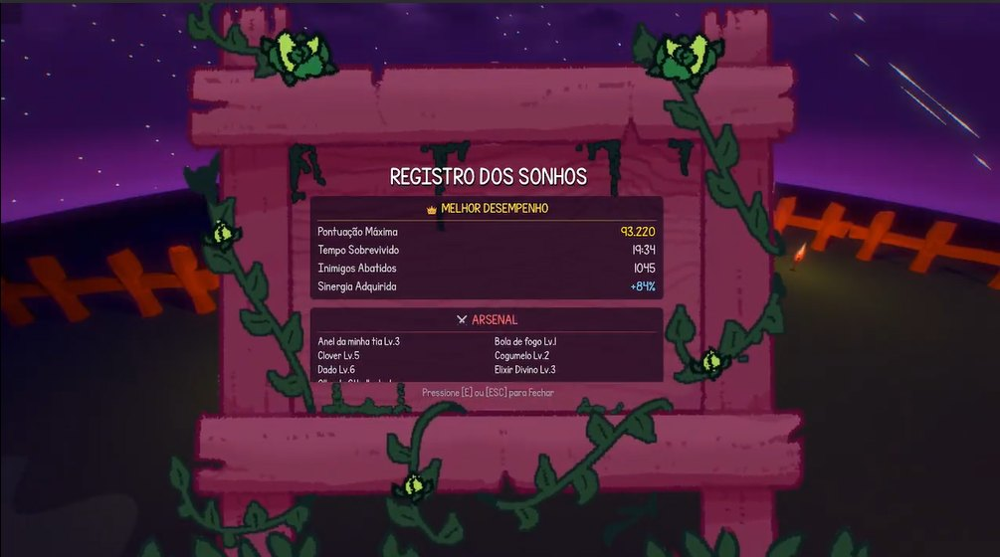
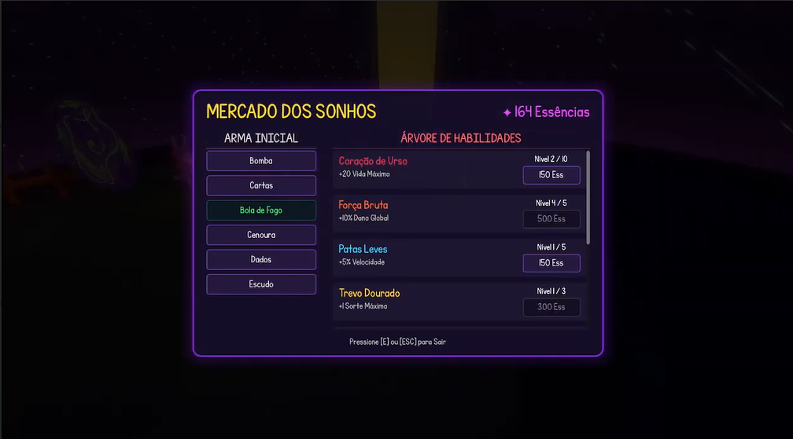
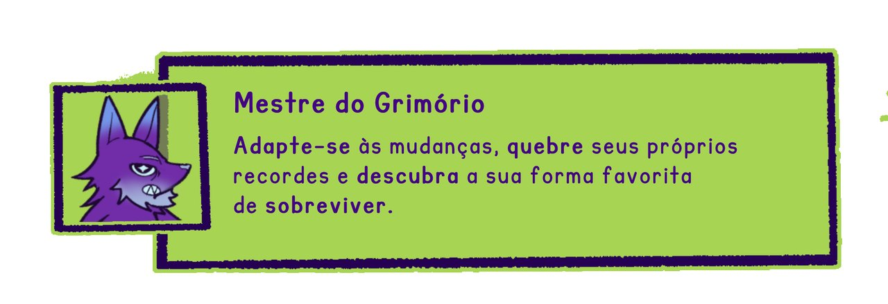
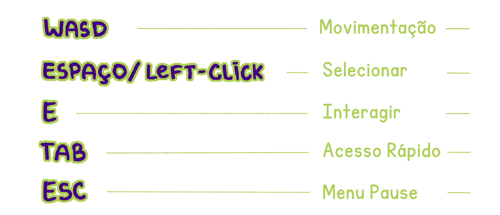

About the gameSobre o jogo
Under the moon, the hunter... Under the sun, the prey. In this survivor-like you play as a coyote trying to survive a relentless open field, where the clock sets the laws of nature. Explore over 887 thousand build combinations across 6 base weapons, 15 passive items and their 17 cursed counterparts, and find your way to survive multiple hordes and 3 bosses with unique traits. Cursed items (The Curse update): every item has a dark twin, drained of color and burning with purple fire, granting drastic bonuses at a price (e.g. double damage at the cost of speed, or triple experience at the cost of Luck). They are unlocked in the Dream Market and drop from chests left by Bosses (guaranteed) or Elites (rare).
Sob a lua, o caçador... Sob o sol, a presa. Neste survivor-like você entra na pele de um coiote tentando sobreviver a um campo aberto implacável, onde o relógio dita as leis da natureza. Explore mais de 887 mil combinações de builds, dentre 6 armas base, 15 itens passivos e suas 17 contrapartes amaldiçoadas! Encontre a sua resposta para sobreviver a múltiplas hordas e 3 bosses com características únicas. Itens amaldiçoados (update The Curse): todo item do jogo possui um gêmeo sombrio, drenado de cor e queimando com fogo roxo, que oferece bônus drásticos mas sempre cobra um preço (ex.: dobrar o dano ao custo da velocidade, ou triplicar a experiência ao custo da Sorte). Eles são desbloqueados no Dream Market e surgem em baús dropados por Bosses (garantido) ou Elites (chance rara).
Play on itch.ioJogar no itch.io →GalleryGaleria








CreditsCréditos
- Kauã Neves (Neferoo no itch.io): Programador, Game Designer, Produtor Musical, Diretor Criativo
- Carlos Magno: Programador
- João Vitor Gusmão: Programador
- Heitor Gomes: Programador
- Maria Luiza Vieira: Prop Artist, UI Designer, Direção de Arte
- Alice Cohen: Animação 2D, Character Design
- Luíza Corrêa: Concept Art, Commercial Art